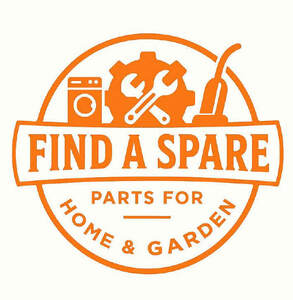

Trade Mark Journal No.2025/020 16 May 2025
UK00004196649 29 April 2025 (2,3,6,7,8,11,12,21,35)

- Class 2
- Paints; Pigments for use in paints; Pigments for paints; Watercolor paints; Water-colors [paints]; Varnish paints; Watercolour paints; Acrylic paints; Coatings [paints]; Lacquers [paints]; Tempera paints; Paints and washes; Sealants [paints]; Tints for paints; Tinters for paints; Thinners for paints; Paints (Thinners for -); Anti-fouling paints; Paints (Anti-fouling -); Spray-on paints; Oil paints; Textured paints; Additives for paints; Acrylic coatings [paints]; Anticorrosive paints; Anti-corrosive paints; Paints (Enamel -); Enamel paints; Phosphorescent paints; Decorating paints; Metallic paints; Powder paints; Automotive paints; Mixed paints; Fabric paints; Fluorescent paints; Ceramic paints; Paints (Ceramic -); Luminous paints; Reflective paints; Paints for artists; Spray coatings [paints]; Powdered paints; Exterior paints; Textured coatings [paints]; Thickeners for paints; Paints (Thickeners for -); Glazes [paints, lacquers]; Binders for paints; Asbestos paints; Acrylic paints for artists; Rubber paints; Thinners for lacquers and other paints; Aluminium paints; Damp-proofing paints; Waterproof paints; Wood coatings [paints]; Coatings for wood as paints; Agglutinates for paints; Clear coatings used as paints; Stabilisers for paints; Reflective spray paints; Interior paints; Electrodeposition paints; Watercolour paints for use in art; Anti-graffiti coatings [paints]; Paints for machinery; Pigmented coatings used as paints; Ornamental paints; Retouching pens [paints]; Watercolor paints for use in art; Agglutinants for paints; Paints for use in manufacturing; Water-repellent paints; Architectural paints; Dispersion paints; Conductive paints; Coatings in the nature of paints; Enamels in the nature of paints; Lacquers in the nature of paints; Fireproof paints; Paints (Fireproof -); Anti-static paints; Oil paints for use in art; Floor paints; Coatings in the nature of sprays [paints]; Organic coatings [paints]; Bactericidal paints; Paints (Bactericidal -); Paint; Anti-corrosive coatings [paints]; Sealants in the nature of paints; Chemicalproof paints; Agglutinants for paints and for putty; Car paints; Polyurethane finishes [paints]; Polyurethane coatings [paints]; Fire-retardant coatings [paints]; Turpentine [thinner for paints]; Waterproof coatings [paints]; Anti-urine paints; Engine paints; Colorants for ceramic paints; Preservatives for tiles [paints]; Coloured paints for facades; Materials for artists [paints]; Vehicle refinishes [paints]; Weathering preservatives [paints]; Phosphorescent materials [paints]; Weatherproofing coatings [paints]; Solvents for thinning paints; Coatings for forms [paints or oils]; Preservatives for cement [paints]; Preservatives (cement -) [paints]; Whites [colorants or paints]; Conversion coatings [paints]; Textured wall coatings [paints]; Concrete sealers [paints]; Colorants for use in formulating paints; Blacks [colorants or paints]; Artists' paints; Undercoats [paints] for use on wood; Water based acrylic paints for use in house painting; Enamel coatings in the nature of paints; Bactericidal coatings [paints]; Preservatives for concrete [paints]; Concrete preservatives [paints]; Preservatives (concrete -) [paints]; Preservatives for brickwork [paints]; Preservatives (brickwork -) [paints]; Coatings for the finishing of surfaces [paints or oils]; Undercoats [paints] for use on metal; Colouring matter for use in paints.
- Class 3
- Sanitary preparations being toiletries; Douching preparations for personal sanitary or deodorant purposes [toiletries]; Toilet preparations; Nasal cleaning preparations for personal sanitary purposes; Non-medicated toilet preparations; Oral hygiene preparations; Toiletry preparations; Non-medicated toiletry preparations; Pre-shaving preparations; Bath preparations; Preparations for the bath; Grease-removing preparations; Shower preparations; Preparations for the shower; Bath preparations, not for medical purposes; Chemical laundry preparations; Cleaning preparations; Make-up preparations; Dishwashing preparations; Cosmetics preparations; Non-medicated bath preparations; Bath preparations (Non-medicated -); Washing preparations; Non-medicated cosmetics and toiletry preparations; Cosmetic preparations; Depilatory preparations; Sun-screening preparations; Cleaning preparations for fabrics; Laundry preparations; Chemical cleaning preparations for household purposes; Baths (Cosmetic preparations for -); Cosmetic preparations for baths; Shaving preparations.
- Class 6
- Metal hardware; Hooks [metal hardware]; Washers [metal hardware]; Pins [metal hardware]; Thimbles [metal hardware]; Pulleys [metal hardware]; Door hardware (Metal -); Nuts [metal hardware]; Metal hardware for buildings; Springs [metal hardware]; Sleeves [metal hardware]; Hardware of metal, small; Hooks for slate [metal hardware]; Buckles of common metal [hardware]; Springs being metal hardware for upholstery; Small items of metal hardware; Metal ironmongery; Metal wire [common metal]; Knobs of metal; Metal knobs; Faceplates of metal; Grommets (Metal -); Metal locksets; Locksets of metal; Screws of metal; Hinges of metal; Metal hinges; Metal doorknobs; Metal components for doors; Architectural fasteners of metal; Metal shims; Shims of metal; Safes [metal or non-metal]; Strongboxes [metal or non-metal]; Box fasteners of metal; Rivets of metal; U-bolts of metal; Dowels of metal; Metal dowels; Bolts of metal; Handrails of metal; Latches of metal; Escutcheons of metal; Furniture ferrules of metal; Metal deadbolts; Frames of metal; Metal frames; Door fasteners of metal; Straps of metal; Fixing devices of metal; Clevises of metal; Metal moldings; Casings of metal; Metal mouldings; Metal hooks; Hooks of metal; Corbels of metal; Metal clamps; Metal flooring; Hasps of metal; Bracings of metal; Metal karabiners; Booths (Metal -) for use in the curing of metal surfaces; Metal padlocks; Padlocks of metal; Washers of metal; Metal washers; Platforms of metal; Shoe dowels of metal; Padlocks of metal, other than electronic; Metal railings; Booths of metal for use in the treatment of metal surfaces; Roof components of metal; Metal brads; Rods of metal; Metal rods; Metal stampings; Ferrules of metal; Metal storage drums; Pins [hardware]; Spacers of metal; Ironmongery of metal for building; Balustrading of metal; Metal cladding; Cable drums (Non-mechanical -) of metal; Bindings of metal; Alloys of metal; Metal alloys; Metal windows; Fittings of metal for windows; Windows (Fittings of metal for -); Metal fittings for windows; Metal handles; Pipework of metal; Partitions of metal; Keys of metal; Metal rails; Rails of metal; Metal ores; Door fittings, of metal; Door fittings of metal; Cornices of metal; Partitioning of metal [other than furniture]; Locks of metal; Balusters of metal; Grilles of metal; Solder (Metal -) for stainless steel; Tantalum [metal]; Machine belt fasteners of metal.
- Class 7
- Sewing machinery; Thrusters for machinery; Conveyors for agricultural and horticultural machinery and parts and fittings therefor; Machinery for working metal; Timber harvesting machinery; Silk spinning machinery; Machinery for working wood; Machinery for shaping metal; Machinery for working glass; Assembly line conveyor machinery; Machinery for shaping wood; Silk reeling machinery; Machinery for shaping glass; Industrial vacuum machines for use in manufacture; Fertilizer manufacturing machines; Industrial hammers [machines]; Grinding tools [machines or parts of machines]; Industrial robot textile milling machines; Agricultural machines; Brakes for industrial machines; Construction machines; Industrial sewing machines; Textile production machines; Sieves [machines or parts of machines]; Machines and machine tools for treatment of materials and for manufacturing; Machinery for working plastic material; Milling tools [parts for machines]; Toolholders for metalworking machines (machine parts); Industrial brakes for industrial washing machines; Machines for the manufacture of textiles; Paper making machinery; Ploughs being agricultural machines; Machines for use in agriculture; Machines for the preparation of foodstuffs [industrial]; Shaking machines for use in manufacture; Industrial cutting machines; Grindstones [parts of machines]; Textile milling machines; Loaders for agricultural machines; Millstones [machine parts]; Grinding tools [parts of machines]; Grindstones [machine parts]; Glassware manufacturing machines; Bookbinding apparatus and machines for industrial purposes; Mechanical shovels [machines]; Agricultural machine tools; Brakes for industrial washing machines; Sprayers for use in agriculture [parts of machines]; Machines for the mechanical handling of items of post [industrial]; Industrial washing machines; Mechanical stamping tools [parts for machines]; Towable agricultural machines; Industrial printing machines; Grinding machines [for metalworking]; Grinding machines for metalworking; Industrial drills [machines]; Tools for machine tools; Tools for use with machine tools; Boring tools [machine tools]; Tools for machines; Cutting tools for use in powered hand-held tools; Machine tools; Power tools; Hydraulic tools; Guidance frameworks for cutting tools [machine]; Mechanical tools; Powered tools; Grinders being power tools; Extensions for power tools; Awls [powered tools]; Collets for power tools; Drills for machine tools; Cutters being machine tools; Drills [power tools]; Lathes [machine tools]; Abrading tools for use with machines; Reamers being machine tools; Broaches being machine tools; Machines for making tools; Edging tools [machines]; Pneumatic tools [machines]; Precision machine tools; Punches for use with machine tools; Tools (Machine -) for cutting; Abrasive instruments [tools for machines]; Gear cutters [machine tools]; Sharpening machines for tools (Electric -); Notchers [machine tools]; Work clamps for machine tools; Ceramic tools for machines; Tools [parts of machines].
- Class 8
- Cutlery; Silverware [cutlery, forks and spoons]; Forks [cutlery]; Knives being tableware; Canteens of cutlery; Table cutlery [knives, forks and spoons]; Tableware [knives, forks and spoons]; Biodegradable cutlery; Spoons being tableware; Hand-operated cutlery; Disposable tableware [cutlery] made of plastics; Forks being tableware; Spreaders [cutlery]; Spreaders being cutlery; Cutlery, kitchen knives, and cutting implements for kitchen use; Table knives, forks and spoons of plastic; Boxes for cutlery [fitted]; Silver plate [knives, forks and spoons]; Knives, forks and spoons; Canteens of cutlery made of precious metal; Plastic spoons, table forks and table knives; Boxes adapted for cutlery; Kitchen knives; Cutlery of precious metal for cutting; Cutlery of precious metals; Cutlery for use by children; Table knives, forks and spoons for babies; Baby spoons, table forks and table knives; Kitchen knives (Non-electric -); Cutlery for use by babies; Stainless steel table knives; Knives; Ceramic knives; Table knives; Stainless steel table spoons; Biodegradable knives; Thin-bladed kitchen knives; Household knives; Japanese chopping kitchen knives; Disposable knives; Chef knives; Sterling silver table knives; Forks and spoons; Folding knives; Spoons; Disposable spoons; Stainless steel table forks; Fish slicing kitchen knives; Vegetable knives; Razor knives; Fruit knives; Kitchen mandolines; Cutting tools [hand tools]; Graving tools [hand tools]; Perforating tools [hand tools]; Scraping tools [hand tools]; Stamping-out tools [hand tools]; Grafting tools [hand tools]; Fulling tools [hand tools]; Boring tools [hand-operated tools]; Rotary tools [hand-operated tools]; Diamond cutting tools for hand-operated tools; Adzes [tools]; Scrapers [hand tools]; Files [tools]; Hand-operated sharpening tools and instruments; Chisels [hand tools]; Screwdrivers [hand tools]; Lifting tools; Forcible entry tools [hand tools]; Extensions for hand tools; Wrenches [hand tools]; Spokeshaves being hand tools; Saws [hand tools]; Shovels [hand tools]; Planers [hand tools]; Files [hand tools]; Loppers [hand tools]; Reamers [hand tools]; Grindstones [hand tools]; Augers [hand tools]; Honing tools [hand-operated]; Rotary metal cutting tools [hand-operated tools]; Countersinks [hand tools]; Spatulas [hand tools]; Clamps [hand tools]; Pruners [hand tools]; Nippers [hand tools]; Drywall finishing tools [hand tool]; Rasps [hand tools]; Hex tools; Wheels (Sharpening -) [hand tools]; Sharpening wheels [hand tools]; Rammers being hand tools; Rakes [hand tools]; Bits for hand-operated tools; Tongs [hand tools]; Routers [hand-operated tools]; Hand-operated tools for gardening; Hand tools and implements (hand-operated); Hand tools and implements [hand-operated]; Hand tools and implements, hand-operated; Gimlets [hand tools]; Bits [hand tools]; Bits being hand tools; Pruning saws [hand tools]; Hand tools, hand-operated; Paint scrapers [hand tools]; Riveters [hand tools]; Stirrers [hand tools]; Jigsaws [hand-operated tools].
- Class 11
- Cooking appliances; Appliances for cooking; Appliances for heating; Electrical appliances for cooking; Refrigerating appliances; Appliances for heating foodstuffs; Grills [cooking appliances]; Sterilising appliances; Appliances for cooking foodstuffs; Refrigerating appliances and installations; Appliances for heating beverages; Griddles [cooking appliances]; Appliances for illumination; Gas cooking appliances; Electric griddles [cooking appliances]; Appliances for smoking foodstuffs; Gas-powered griddles [cooking appliances]; Glue-heating appliances; Filters for lighting appliances; Electric domestic cooking appliances; Cooling appliances and installations; Chilling appliances; Cooling apparatus and appliances; Filters for illumination appliances; Appliances for water filtration [other than machines]; Electric appliances for making yogurt; Yogurt (Electric appliances for making -); Electric appliances for making yoghurt; Kitchen machines (Electric -) for cooking; Appliances for water distribution [automatic]; Appliances for bathing the feet; Electric kitchen ovens; Water mixing appliances; Spark igniters for gas appliances; Kitchen stoves; Hair drying appliances; Appliances for drying hair; Kitchen machines (Gas -) for cooking; Electrical cooking utensils; Electric refrigerators [for household purposes]; Electric toasters [for household purposes]; Electric cooking ovens for household purposes; Sun tanning appliances; Electric cooking ovens for household use; Electric cooking stoves [for household purposes]; Kitchen ranges [ovens]; Electric ovens for household purposes; Electric cooking stoves for household use; Electrical fans being parts of household airconditioning installations.
- Class 12
- Vehicles; Vans [vehicles]; Windshields for vehicles; Electric trucks [vehicles]; Off-road vehicles; Scooters [vehicles]; Trailers [vehicles]; Automotive vehicles; Undercarriages for vehicles; Armored vehicles; Motor vehicles; Armoured vehicles; Windscreens for vehicles; Axles for vehicles; All-terrain vehicles; Two-wheeled vehicles; Golf cars [vehicles]; Unmanned vehicles; Sunroofs for vehicles; Towed vehicles; Vehicles and conveyances; Wheeled vehicles; Powertrains for land vehicles; Aeroplanes towing vehicles; Wheels for vehicles; Trolleys [vehicles]; Trains [vehicles]; Chassis of vehicles; Chassis for vehicles; Brakes for vehicles; Bumpers for vehicles; Airbags for vehicles; Autonomous vehicles; Air-cushion vehicles; Amphibious vehicles; Patrol vehicles; Electric vehicles; Vehicles (Electric -); Sleighs [vehicles]; Bodies for vehicles; Tyres for motor vehicles; Electric tractors [vehicles]; Safety belts for vehicles for motor cars; Tyres for two-wheeled vehicles; Self-driving transport vehicles; Tires for two-wheeled motor vehicles; Suspensions for vehicles; Military vehicles; Bodies for motor vehicles; Autonomous motor vehicles; Passenger motor vehicles; Trailers for motor land vehicles; Two-wheeled motor vehicles; Commercial vehicles; Hybrid vehicles; Hoods for vehicles; Land automotive vehicles; Motors for land vehicles; Armoured bodies for vehicles; Gears for vehicles; Wheels for motor vehicles; Seats for automotive vehicles; Tracks for armoured vehicles; Tyres for commercial vehicles; Driving motors for land vehicles; Seats for vehicles; Cars; Propellers for vehicles; Utility vehicles; Non-motorized scooters [vehicles]; Railway vehicles; Bodyworks for motor vehicles; Gearboxes for land vehicles; Rail vehicles; Refrigerated vehicles; Vehicles (Refrigerated -); Chassis for motor vehicles; Motor vehicles (Chassis for -); Ashtrays for vehicles; Caissons [vehicles]; Mudguards for vehicles; Axles for land vehicles; Diesel motors for land vehicles; Camping vehicles; Electric sunroofs for vehicles; Doors for vehicles; Submersible vehicles; Motor land vehicles; Land motor vehicles; Industrial vehicles; Armoured land vehicles; Marine vehicles; Rocket-propelled vehicles; Tires for land vehicles; Upholstery for vehicles; Land vehicles; Mobility vehicles; Windscreens for land vehicles; Fuel tanks for vehicles; Thrusters for vehicles; Horns for vehicles; Petrol tanks for vehicles.
- Class 21
- Household containers; Household or kitchen containers; Disposable lids for household containers; Trash containers for household use; Plastic bowls [household containers]; Containers for household or kitchen use; Heat-insulated containers for household use; Compost containers for household use; Lockable non-metal household containers for food; Household containers for storing pet food; Containers for ice, for household purposes; All-purpose portable household containers; Trays [household]; Lotion containers, empty, for household use; Household containers of precious metal; Jars for household use; Disposable aluminium foil containers for household purposes; Disposable aluminum foil containers for household purposes; Household utensils; Cast stone containers for household; Kitchen containers; Buckets for household use; Colanders for household use; Non-metal recycling bins for household use; Food storage containers; Trays for household purposes; Valet trays [receptacles for small objects] for household purposes; Sifters [household utensils]; Toothbrush containers; Strainers for household use; Plastic containers for dispensing food to pets; Sieves [household utensils]; Insulated containers for beverage cans, for domestic use; Containers for cosmetics; Waste bins for household use; Containers for beverages; Laundry bins for household purposes; Bins for household refuse; Baskets for household purposes; Dishes [household utensils]; Insulated flasks for household use; Colanders for household purposes; Metal baskets for household purposes; Coal buckets for household use; Household or kitchen utensils; Tableware, cookware and containers; Soap containers; Glassware for household purposes; Graters [household utensils]; Popcorn tins, empty, for household use; Empty popcorn tins for household use; Cinder sifters [household utensils]; Squeegees [for household use]; Plastic containers for dispensing drink to pets; Containers for dentifrices; Cages for household pets; Pets (Cages for household -); Glass lids for industrial packaging containers; Brushes with detergent containers; Graters for household use; Foil food containers; Pomanders [containers]; Industrial packaging containers of porcelain; Laundry baskets for household purposes; Laundry balls for use as household utensils; Baskets of common metal for household use; Household gloves; Household plastic gloves; Combined lids for kitchen containers; Napkin dispensers for household use; Utensils for household purposes; Non-electric food blenders [for household purposes]; Nebulizers for household use.
- Class 35
- Advertising; Advertising and marketing; Advertising copywriting; Advertising and advertisement services; Advertising and publicity; Publicity and advertising; Advertising and marketing services; Advertising, marketing and promotional services; Advertising, promotional and marketing services; Marketing, advertising, and promotional services; Banner advertising; Television advertising; Advertising services of a radio and television advertising agency; Advertising and marketing consultancy; Advertising, marketing and promotion services; Marketing, advertising and promotion services; Advertising and promotional services; Promotional and advertising services; Promotional advertising services; Advertising and publicity services; Online advertising; Leasing of advertising billboards; Newspaper advertising; Advertising agencies; Advertising services; Hire of advertising billboards; Electronic billboard advertising; Copywriting for advertising and promotional purposes; Recruitment advertising; Promotion [advertising] of business; Radio advertising; Promotion, advertising and marketing of on-line websites; Leasing of advertising hoardings; Mail-order advertising; On-line advertising and marketing services; Magazine advertising; Outdoor advertising; Advertising and promotion services; Cinema advertising; Radio advertising and commercials; On-line advertising; Advertising research; Hire of advertising hoardings; Promotion [advertising] of travel; Advertising services provided by a radio and television advertising agency; Advertising of cinemas; Design of advertising flyers; Graphic advertising services; Advertising services for the promotion of e-commerce; Distribution of advertising, marketing and promotional material; Digital advertising services; Dissemination of advertising, marketing and publicity materials; Design of advertising brochures; Classified advertising; Rental of advertising space on the Internet for employment advertising; Distribution of advertising brochures; Advertising planning; Modeling for advertising or sales promotion; Arrangement of advertising; Modelling for advertising or sales promotion; Preparation of advertising campaigns; Advertising analysis; Advertising consultation; Online advertising services; Promotion [advertising] of concerts; Consultancy services relating to advertising, publicity and marketing; Response advertising; Rental of billboards [advertising boards]; Political advertising services; Advertising flyer distribution; Rental of advertisement space and advertising material; Press advertising services; Modeling services for advertising or sales promotion; Scriptwriting for advertising purposes; Advertising services for the promotion of beverages; Advertising, promotional and public relations services; Production of advertising matter and commercials; Services of advertising agencies; Elevator advertising; Advertising research services; Press advertising consultancy; Brand creation services (advertising and promotion); Research services relating to advertising and marketing; Distribution of advertising announcements; Design of advertising logos; Dissemination of advertising and promotional materials; Classified advertising services; Direct market advertising; Hiring of advertising materials; Advertising for others; Promotional advertising for exploration projects; Exhibitions for commercial or advertising purposes; Advertising, including on-line advertising on a computer network; Promotional marketing; Radio and television advertising; Post-production editing of advertising or commercials; Advertisement billboards (Rental of -); Rental of advertisement billboards; Market research for advertising; Distribution of advertising leaflets; Consultancy relating to advertising; Distribution of advertising materials; Advertising and marketing services provided by means of social media; Web indexing for commercial or advertising purposes; Rental of advertising material; Planning services for advertising; Advertising of business web sites; Advertising services for the literary industry; Advertising text publication services; Advertising services relating to newspapers; Advertising services for architects; Arranging of advertising in cinemas; Publication of advertising literature; Advertising, marketing and promotional consultancy, advisory and assistance services; Production of advertising materials; Marketing; Design of advertising materials; Advertising and marketing services provided by means of blogging; Modelling agency services for advertising purposes; Distribution of advertising mail and of advertising supplements attached to regular editions; Rental of signs for advertising purposes; Advertising matter (Production of -); Production of advertising matter; Organisation of customer loyalty programs for commercial, promotional or advertising purposes; Publication of advertising texts; Distribution of products for advertising purposes; Modelling and models for advertising or sales promotion; Advertising flyer distribution for others; Organisation of exhibitions for commercial and advertising purposes; Organisation of exhibitions for commercial or advertising purposes; Advertising particularly services for the promotion of goods; Advertising services to promote the sale of beverages.
FINDASPARE LTD
Representative: Pam Rogers